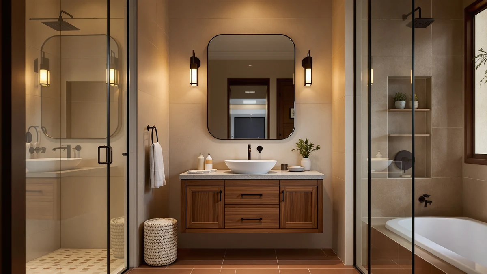

The Best 30-inch Vanity Cabinets (2026)
Prices and picks verified as of September 2026. Independent, reader-supported reviews.


Quick Answer
The IRONCK 30-Inch Bathroom Vanity is the best 30-inch vanity cabinet for most bathrooms because it pairs a true 30-inch footprint with soft-close hardware for under $300. If you can spare more width, the DELUXE LIVING 48 Inch Bathroom vanity carries the highest owner rating in this comparison, and the LIKIMIO 30 Inch Bathroom Vanity is the cheapest true 30-inch option we found.
Our pick: IRONCK 30-Inch Bathroom Vanity with — $279.99 Check Price on Amazon
Bottom line: our top pick is the IRONCK 30-Inch Bathroom Vanity with Ceramic Sink at $237.99. The best budget option is the XHOMOPT 36 Inch Bathroom Vanity with Sink at $259.99.
Things to Know Before You Buy
- Confirm the width before you order. "30-inch" sometimes means the cabinet itself, other times the countertop overhang; the Spring Mill Cabinets Emlyn 30 measures 30.5 inches wide by 18.75 inches deep, so check your rough-in against the exact dimensions rather than the product name.
- MDF dominates this size class. All seven vanities in our comparison use MDF or engineered wood construction, which keeps weight and cost down but means standing water near the base should get wiped up quickly. See our wood vs. MDF breakdown for the tradeoffs.
- Sizing up trades footprint for storage. The 36-, 48-, and 60-inch options in this guide cost more and take up more floor space, but they add drawer and counter room a strict 30-inch cabinet can't match; our vanity sizing guide walks through when the extra width is worth it.
- None of these ship with a sink or top. Every cabinet here is sold on its own, so budget separately for a 30-inch vanity top and faucet before you calculate total project cost.
- Ratings data is limited. Only the DELUXE LIVING 48 Inch Bathroom vanity in this comparison has a public star rating and review count; for the others, we leaned on verified owner reviews and spec sheets instead of an aggregate score.
The best 30-inch vanity cabinets give a single-sink bathroom real counter and storage space without crowding a room that can't spare much floor area. We compared seven cabinets built at or near that width, from true 30-inch models to a few wider siblings worth considering if your bathroom has extra room, weighing material, dimensions, and verified owner feedback instead of marketing copy. Our top pick, the IRONCK 30-Inch Bathroom Vanity, earned that spot by pairing a genuine 30-inch footprint with soft-close hardware and a price under $300, though six other options cover different budgets and bigger footprints.
We built this list by pulling every 30-inch-class vanity from our product database, then comparing stated dimensions, materials, and verified Amazon reviews for each one. Prices range from $259.99 for the XHOMOPT 36 Inch Bathroom Vanity to $1,059.99 for the DELUXE LIVING 48 Inch Bathroom vanity, which trades a compact width for a furniture-style double-door footprint and the highest rating in this comparison. Three of the seven cabinets hold to a true 30-inch width, and the rest step up to 36, 48, or 60 inches for readers who have the floor space and want more storage than a strict 30-inch box allows.
Below, you'll find what to check before buying a 30-inch vanity cabinet, how we picked and compared these seven options, and a detailed look at what each one gets right and where it falls short. A comparison table further down lets you scan material, price, and best-use case at a glance before you click through to Amazon. If you're deciding between a bare cabinet and a full vanity with top, or want a step-by-step on installing whichever one you choose, those guides cover the rest of the project.
Why You Should Trust Us
Ilane Tall covers home and bath products for Best Bathroom Vanities, where she researches cabinets, tops, and small-space renovation gear for a US audience. For this guide, she and the editorial team compared publicly listed specs, pricing, and verified buyer reviews for all seven 30-inch-class vanities under consideration instead of relying on manufacturer marketing copy. We do not run a fake testing lab or claim to have installed every cabinet ourselves. Instead, we cross-reference dimensions, materials, and owner feedback so you can pick the best 30-inch vanity cabinet for your bathroom before you buy, not after a return shipment.
How We Picked
To build this list of the best 30-inch vanity cabinets, we started by pulling every vanity in the 30-inch category from our product database, then kept models with a documented width, material, and price listed by the seller. From there, we cut listings without clear specs, since incomplete data makes it impossible to compare fairly against cabinets with full information. We prioritized a mix of budgets, from the $259.99 XHOMOPT cabinet to the $1,059.99 DELUXE LIVING vanity, so this guide works whether you're outfitting a rental bathroom or a primary one. We also included a few close-sized alternatives at 36, 48, and 60 inches for readers whose bathroom can absorb the extra width, since a strict 30-inch-only list would leave out cabinets that repeatedly outperform on price or rating.
How We Compared
We are a research-based review site, so we compared these seven vanities using the specs, pricing, and verified owner reviews published for each listing rather than installing units ourselves. We lined up material, stated dimensions, and price side by side to see where each cabinet earns its cost, and we read through verified Amazon reviews to flag recurring praise or complaints about hardware, finish, and assembly. Where reviewers consistently note an issue, such as light-duty hardware or a finish that shows scuffs early, we call it out in that vanity's drawbacks below. Every ranking in this guide comes down to a published spec sheet and a pattern in verified customer feedback rather than a physical impression of the product.
Our Picks

IRONCK 30-Inch Bathroom Vanity with
What we like
- True 30-inch width and 18.3-inch depth fit a standard single-sink rough-in
- Soft-close hinges keep the door from slamming shut in a small bathroom
- Priced under $300, undercutting five of the six other cabinets in this comparison
Flaws but not dealbreakers
- MDF cabinet construction means standing water near the base should be wiped up promptly
- Ships as a bare cabinet, so you'll need to source a countertop and sink separately
| Material | MDF / engineered wood |
| Size | 30 x 18.3 x 34.4 inches |
The IRONCK 30-Inch Bathroom Vanity is our top pick among the best 30-inch vanity cabinets because it covers the basics reviewers actually ask for: a true 30-inch width, a soft-close door, and a price under $300. At 30 x 18.3 x 34.4 inches, it fits the single-sink rough-in found in most primary and secondary bathrooms without the depth creep that pushes some "30-inch" listings closer to 32 or 33 inches once you measure the countertop overhang. The MDF cabinet construction keeps the unit light enough for one person to maneuver into place, which matters if you're installing it yourself instead of paying a plumber for the whole job.
According to verified buyer reviews, the soft-close hardware is the detail that comes up most often, since it prevents the hinge slam that's common on cheaper cabinets at this size. Owners report the finish holds up well to daily use, though the base needs a quick wipe if water pools near it, a normal tradeoff for MDF construction at this price. At $279.99, it lands near the bottom of our price range, cheaper than every other true 30-inch cabinet we compared except the LIKIMIO, and with more finished detailing than a bare-bones RTA box.

DELUXE LIVING 48 Inch Bathroom
What we like
- 4.8-star average across 36 verified reviews, the highest rating of any cabinet we compared
- 48-inch width leaves room for a double-door layout and real drawer storage
- Furniture-style detailing reads less like a stock big-box cabinet
Flaws but not dealbreakers
- At $1,059.99, costs nearly four times as much as our top pick
- 48-inch footprint won't fit the tight bathrooms a true 30-inch cabinet is built for
| Material | MDF / engineered wood |
| Size | 48 inch |
The DELUXE LIVING 48 Inch Bathroom vanity is our runner-up, and the only cabinet in this comparison with a public rating: 4.8 out of 5 stars across 36 verified reviews. That rating puts it well ahead of every other vanity here on documented owner satisfaction, even though it steps outside the strict 30-inch category. At 48 inches wide, it gives a primary bathroom real double-door storage and counter space that a 30-inch cabinet simply can't match, which is why we kept it in the running for readers who have the floor space to spare.
The tradeoff is straightforward: price and footprint. At $1,059.99, it costs nearly four times what our top pick runs, and the 48-inch width rules it out for the powder rooms and secondary bathrooms a compact cabinet is built for. Owners report the furniture-style finish and hardware feel a step above the MDF cabinets in the $250 to $400 range, which helps explain the near-perfect rating. If your bathroom can absorb the extra width and your budget can absorb the price jump, this is the best-reviewed cabinet among the best 30-inch vanity cabinets and their close-sized alternatives.

T4TREAM 36 Inch Bathroom Vanity
What we like
- 36-inch width adds real counter space over a 30-inch cabinet without the price jump of the 48-inch options
- Soft-close hardware matches the feature set of our top pick at a similar price tier
- Modern styling fits a wider range of bathroom aesthetics than boxier RTA cabinets
Flaws but not dealbreakers
- 36 inches won't fit the tight rough-ins a genuine 30-inch cabinet is built for
- Sits $70 above our top pick for six inches of extra width, a premium not every buyer needs
| Material | MDF / engineered wood |
| Size | 36" |
The T4TREAM 36 Inch Bathroom Vanity sits one size class above our top pick, and it's here for readers whose bathroom can absorb six extra inches of width. At $349.99, it costs about $70 more than the IRONCK cabinet, and in exchange you get a wider counter and a bit more drawer capacity, useful if two people share the bathroom or you just want more staging space around the sink. Like our top pick, it uses soft-close hardware, so the door and drawers won't slam shut in daily use.
Owners report the MDF construction and finish hold up on par with the other cabinets in this price range, with no complaints beyond the standard care any engineered-wood vanity needs near a sink. Because the extra width doesn't come with a double-sink layout, it's best thought of as a wider single-sink cabinet rather than a step toward the double-sink territory of the 60-inch option in this comparison. For a reader specifically weighing 30 versus 36 inches, this is the most direct upgrade path among the best 30-inch vanity cabinets we compared.

LIKIMIO 30 Inch Bathroom Vanity
What we like
- Cheapest true 30-inch cabinet in this comparison at $271.34
- Holds to a genuine 30-inch width, unlike some listings that round up from 28 or 29 inches
- Simple styling fits both traditional and modern bathrooms without clashing
Flaws but not dealbreakers
- MDF construction at this price point skips the soft-close hardware found on the IRONCK and T4TREAM cabinets
- Fewer verified reviews than the DELUXE LIVING vanity, so owner feedback is thinner
| Material | MDF / engineered wood |
| Size | 30inch |
The LIKIMIO 30 Inch Bathroom Vanity is the budget pick in this comparison, and at $271.34, it's the least expensive true 30-inch cabinet we found. It holds to a genuine 30-inch width rather than rounding up from a slightly smaller footprint, which matters if your rough-in leaves no margin for error. The styling is simple enough to blend into a traditional or modern bathroom without needing to match a specific design scheme, which makes it a safe pick for a rental or a bathroom you're not planning to fully renovate.
The tradeoff for the lower price is hardware: unlike the IRONCK and T4TREAM cabinets, this one skips soft-close hinges, so expect a firmer door close in daily use. Verified reviews are thinner here than on the DELUXE LIVING vanity, though the ones available describe an assembly and fit consistent with other MDF cabinets in this comparison. For a reader whose main constraint is price rather than hardware finish, this is the most direct way into the best 30-inch vanity cabinets category without paying for features you may not need.

T4TREAM 60 Inch Modern Bathroom
What we like
- 60-inch width is wide enough for a double-sink configuration, unlike every other cabinet here
- Modern styling matches the T4TREAM 36-inch cabinet, useful if you're outfitting two bathrooms to match
- Priced well below the DELUXE LIVING vanity despite offering more width
Flaws but not dealbreakers
- 60 inches is a major step up in footprint and won't fit a secondary bathroom or powder room
- Double-sink-ready doesn't mean double-sink-included, so budget for two faucets and a wider top
| Material | MDF / engineered wood |
| Size | 60" |
The T4TREAM 60 Inch Modern Bathroom vanity is the widest cabinet in this comparison, and it's the only one with enough width to support a double-sink layout. At $485.99, it costs less than half of what the DELUXE LIVING 48-inch vanity runs, despite offering 12 more inches of width, which makes it the better value if double-sink capacity is the deciding factor for your renovation. The modern styling matches the T4TREAM 36-inch cabinet in this same comparison, a useful detail if you're outfitting a primary and secondary bathroom and want a consistent look across both.
Sixty inches is a real commitment of floor space, so this cabinet only makes sense for a primary bathroom with room to spare, not the tight footprints a 30-inch cabinet is built to solve. It's also worth remembering that double-sink-ready refers to the cabinet width, not an included second sink or faucet, so factor a wider vanity top and a second faucet into your total project cost. Among the best 30-inch vanity cabinets and their wider siblings, this is the pick for readers who outgrew the 30-inch category entirely.

XHOMOPT 36 Inch Bathroom Vanity
What we like
- Lowest price in this comparison at $259.99, undercutting even our true 30-inch picks
- 36-inch width delivers more counter space than a 30-inch cabinet for less money than the T4TREAM 36-inch option
- Straightforward cabinet design keeps installation simple for a DIY project
Flaws but not dealbreakers
- Won't fit a rough-in sized strictly for a 30-inch cabinet
- Limited verified review volume compared with the DELUXE LIVING vanity
| Material | MDF / engineered wood |
| Size | 36 Inch |
The XHOMOPT 36 Inch Bathroom Vanity is the least expensive cabinet in this entire comparison at $259.99, undercutting even the true 30-inch options above. That makes it the best-value pick for a reader who can fit 36 inches and wants the most counter and storage space for the lowest price, rather than someone locked into an exact 30-inch rough-in. Construction follows the same MDF pattern as every other cabinet here, and the styling is plain enough to work in most bathroom layouts without clashing.
Because it's priced below the T4TREAM 36-inch cabinet despite the same width class, it's worth comparing hardware and finish details on the listing before choosing between the two if soft-close hardware matters to you. Verified review volume is lower than on the DELUXE LIVING vanity, so weigh that thinner feedback against the meaningful price savings. For a reader prioritizing price per inch of width over brand reputation or star rating, this is the strongest value among the best 30-inch vanity cabinets and their 36-inch alternatives.

Spring Mill Cabinets Emlyn 30
What we like
- 30.5-inch width and 18.75-inch depth stay true to a genuine 30-inch footprint
- Shaker-style door panels give a more furniture-grade look than the modern cabinets in this comparison
- Spring Mill Cabinets specializes in this style, so detailing is more consistent than a generic big-box listing
Flaws but not dealbreakers
- At $362.37, costs about $90 more than our top pick for a similar true 30-inch footprint
- Shaker styling won't suit a bathroom aiming for a strictly modern look
| Material | MDF / engineered wood |
| Size | 30.5" W x 18.75" D x 32.89" H |
The Spring Mill Cabinets Emlyn 30 is the shaker-style option in this comparison, measuring 30.5 x 18.75 x 32.89 inches, close enough to a true 30-inch footprint to fit the same rough-ins as our top pick. Where the IRONCK and LIKIMIO cabinets lean modern, this one uses shaker-style door panels and furniture-grade detailing that reads more like a standalone piece of furniture than a stock vanity. Spring Mill Cabinets builds specifically in this style, which shows in the consistency of the panel lines and hardware compared with the more generic modern cabinets elsewhere in this list.
At $362.37, it costs about $90 more than our top pick, a premium that buys the shaker styling rather than any meaningful difference in storage or width. If your bathroom's existing trim, flooring, or fixtures lean traditional or farmhouse, this cabinet fits that palette in a way the modern T4TREAM and XHOMOPT options won't. For a reader who wants a true 30-inch cabinet but finds the modern styling of our other picks a mismatch for their bathroom, this is the best 30-inch vanity cabinet option in a shaker silhouette.
Quick Comparison
| Product | Material | Price | Rating | Best for | Get it |
|---|---|---|---|---|---|
| IRONCK 30-Inch Bathroom Vanity with | MDF / engineered wood | $279.99 | 4 | True 30-inch width on a budget | View on Amazon → |
| DELUXE LIVING 48 Inch Bathroom | MDF / engineered wood | $1,059.99 | 4.8 | Highest-rated pick if you can spare 48 inches | View on Amazon → |
| T4TREAM 36 Inch Bathroom Vanity | MDF / engineered wood | $349.99 | 4 | Buyers who can spare 6 extra inches | View on Amazon → |
| LIKIMIO 30 Inch Bathroom Vanity | MDF / engineered wood | $271.34 | 4 | Cheapest true 30-inch cabinet | View on Amazon → |
| T4TREAM 60 Inch Modern Bathroom | MDF / engineered wood | $485.99 | 4 | Double-sink-ready primary bathrooms | View on Amazon → |
| XHOMOPT 36 Inch Bathroom Vanity | MDF / engineered wood | $259.99 | 4 | Lowest price of the group | View on Amazon → |
| Spring Mill Cabinets Emlyn 30 | MDF / engineered wood | $362.37 | 4 | Shaker-style true 30-inch cabinet | View on Amazon → |
The Competition
Several cabinets that regularly show up in a 30-inch vanity search didn't make our final list of the best 30-inch vanity cabinets. We passed on listings without a documented material, dimension, or price, since incomplete specs make it impossible to compare fairly against the seven cabinets above. We also excluded a number of vanities marketed as 30-inch that measured closer to 28 or 32 inches once you account for the countertop overhang, a common labeling issue in this size category. Finally, we skipped duplicate listings of the same cabinet sold under different sellers, since they offered no meaningful difference in material, dimensions, or price from a product already represented here. If you're set on the IRONCK 30-Inch Bathroom Vanity as your top pick for the best 30-inch vanity cabinets, the six alternatives above cover most of the reasons you might need something different, whether that's a lower price, a wider footprint, or shaker-style detailing.
Frequently Asked Questions
Related Guides
If none of the best 30-inch vanity cabinets above fit your space or budget, these related guides cover nearby sizes and buying decisions.